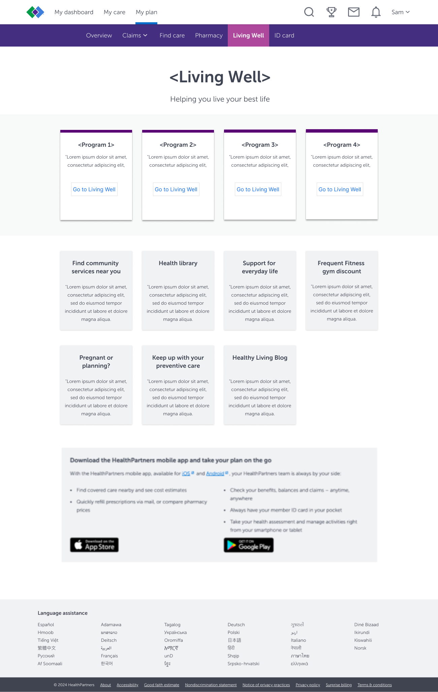
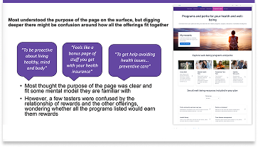
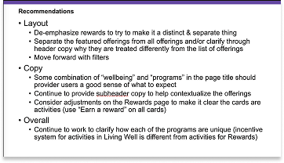

Health Partners is an integrated, nonprofit health care provider and health insurance company. Providing coverage, research and education to its members, patients and the community. I was the lead designer working on this project alongside a researcher and accessibility expert.
Shown below is a side by side comparison of the old and redesigned version of the Member Programs Page. Some of the key changes include improved visual hierarchy, a centralized location for all health plan offerings and a drop down filter to make it easier for users to find the best programs for them. Living Well and My rewards are featured prominently due to these program being the most profitable for the business.
Before

After

Digital Health • Patient-facing Touchpoints
This was a high visibility project that involved many internal stakeholders alongside several third party vendors. I facilitated a series of hour long brainstorming sessions with stakeholders in order to understand and calibrate all party’s objectives. These sessions were done in a Miro board where each participant provided their insight via sticky notes. Due to privacy concerns I’m unable to share this board. Below are three rough designs that I made based off stakeholder feedback, best design principals and honoring the existing Health Partners design library.


Moderated Usability Tests • Live Prototype Walkthroughs
I facilitated moderated usability tests with a total of five Health Partner Members. Users were asked to locate specific programs and give their impressions on the redesigned page. Below is the design that was used in the study accompanied by findings that impacted the final design. The results of the study were presented to stakeholders.



Here is the final design that allows stakeholders to determine which programs they want to showcase prominently. In this iteration, Living Well and My rewards were found to be the ones that the business wanted to prioritize in 2025, so they are displayed prominently in image cards. As you go down the page, a list of all available programs and perks will appear. The number of cards listed will vary on the programs that correspond with a specific user’s health conditions. A drop down filter was incorporated as well to allow user’s the ability to filter the programs based on what they are interested in exploring.